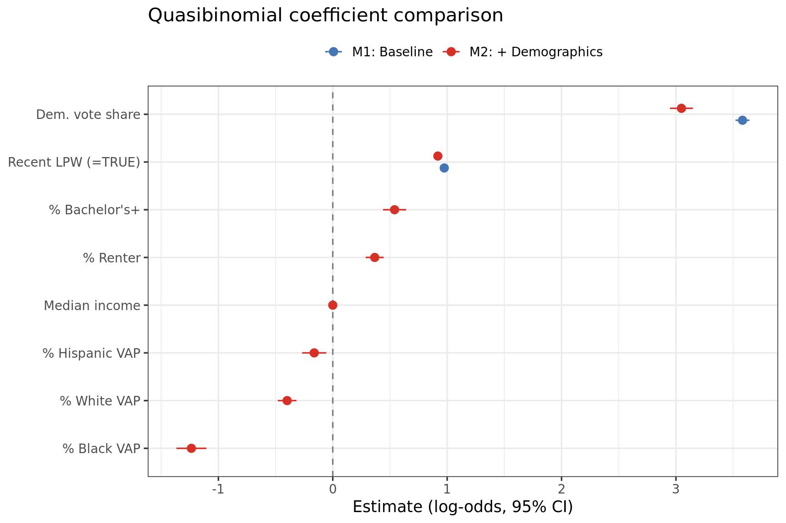
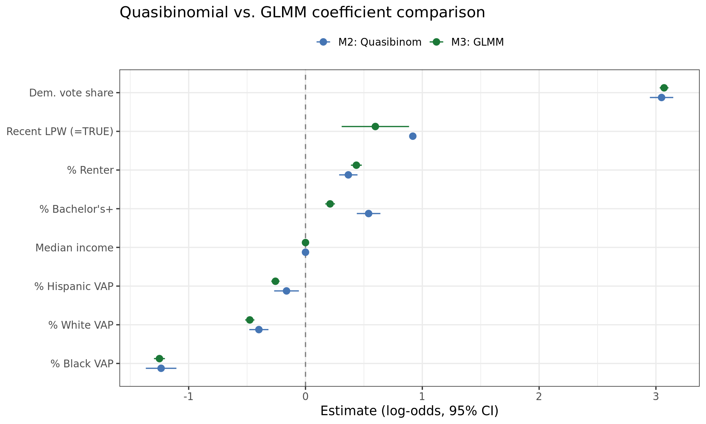

library(mice)
library(dplyr)
library(lme4)
library(broom)
library(broom.mixed)
library(knitr)
library(kableExtra)
library(ggplot2)
library(scales)
load("../data/model_results.RData")RCV Models with Demographic Controls (Imputed Data)
Overview
All models use a quasibinomial GLM with logit link on cbind(rcv_yes, rcv_no) — each ballot is treated as a Bernoulli trial, with quasibinomial correction for overdispersion. Results are pooled across 5 multiply-imputed datasets using Rubin’s rules. Imputation excluded all RCV outcome variables.
Models:
- M1: Quasibinomial baseline —
dem_share + recent_lpwonly - M2: Quasibinomial + demographic controls
- M3: GLMM with random intercept by locale + controls
Demographic controls (PL94-171 + ACS 5-year): pct_white_vap, pct_black_vap, pct_hispanic_vap, median_income, pct_bach_plus, pct_renter
Data summary
diag_data %>%
group_by(locale, rcv_jurisdiction, recent_lpw) %>%
summarise(
n = n(),
mean_yes = mean(yes_share),
mean_dem = mean(dem_share),
mean_white = mean(pct_white_vap),
med_income = median(median_income),
mean_bach = mean(pct_bach_plus),
.groups = "drop"
) %>%
kable(digits = 3, caption = "Analysis sample by locale")| locale | rcv_jurisdiction | recent_lpw | n | mean_yes | mean_dem | mean_white | med_income | mean_bach |
|---|---|---|---|---|---|---|---|---|
| Alaska | statewide | 1 | 578 | 0.486 | 0.403 | 0.534 | 58438 | 0.192 |
| Albany | local | 0 | 3 | 0.733 | 0.892 | 0.489 | 103132 | 0.728 |
| Bloomington | local | 0 | 32 | 0.512 | 0.638 | 0.754 | 78224 | 0.428 |
| Boulder | local | 0 | 88 | 0.782 | 0.864 | 0.830 | 72279 | 0.767 |
| Eureka | local | 0 | 8 | 0.603 | 0.687 | 0.721 | 43199 | 0.290 |
| Maine | statewide | 1 | 527 | 0.456 | 0.376 | 0.967 | 53428 | 0.260 |
| Massachusetts | statewide | 0 | 2173 | 0.470 | 0.673 | 0.716 | 80462 | 0.442 |
| Minnetonka | local | 0 | 23 | 0.547 | 0.662 | 0.867 | 100363 | 0.613 |
Model 1: Quasibinomial baseline
\[\text{logit}(p) = \beta_0 + \beta_1 \cdot \text{dem\_share} + \beta_2 \cdot \text{recent\_lpw}\]
summary(pool_m1) %>%
kable(digits = 4, caption = "M1: Quasibinomial baseline (pooled)")| term | estimate | std.error | statistic | df | p.value |
|---|---|---|---|---|---|
| (Intercept) | -2.5252 | 0.0211 | -119.8107 | 3427.002 | 0 |
| dem_share | 3.5820 | 0.0311 | 115.0429 | 3427.002 | 0 |
| recent_lpw | 0.9745 | 0.0115 | 84.8392 | 3427.002 | 0 |
Model 2: Quasibinomial with demographic controls
\[\text{logit}(p) = \beta_0 + \beta_1 \cdot \text{dem\_share} + \beta_2 \cdot \text{recent\_lpw} + \boldsymbol{\gamma} \cdot \mathbf{X}_{\text{demo}}\]
summary(pool_m2) %>%
kable(digits = 4, caption = "M2: Quasibinomial + controls (pooled)")| term | estimate | std.error | statistic | df | p.value |
|---|---|---|---|---|---|
| (Intercept) | -2.0479 | 0.0574 | -35.6936 | 511.7465 | 0.0000 |
| dem_share | 3.0483 | 0.0511 | 59.6392 | 706.4663 | 0.0000 |
| recent_lpw | 0.9186 | 0.0124 | 74.3786 | 694.0560 | 0.0000 |
| pct_white_vap | -0.3990 | 0.0418 | -9.5491 | 777.9116 | 0.0000 |
| pct_black_vap | -1.2361 | 0.0668 | -18.4949 | 1708.4327 | 0.0000 |
| pct_hispanic_vap | -0.1624 | 0.0540 | -3.0081 | 3004.8040 | 0.0027 |
| median_income | 0.0000 | 0.0000 | -4.7106 | 175.4548 | 0.0000 |
| pct_bach_plus | 0.5403 | 0.0515 | 10.4862 | 376.1936 | 0.0000 |
| pct_renter | 0.3667 | 0.0401 | 9.1544 | 67.7821 | 0.0000 |
Adjusted pseudo-R² comparison
Deviance-based: \(1 - \frac{\text{deviance}/\text{df}_{\text{resid}}}{\text{null deviance}/\text{df}_{\text{null}}}\). Penalizes for number of parameters.
tibble(
Model = c("M1: Baseline", "M2: + Demographics"),
`Pseudo-R²` = round(c(pr2_m1$pseudo_r2, pr2_m2$pseudo_r2), 4),
`Adj. Pseudo-R²` = round(c(pr2_m1$adj_pseudo_r2, pr2_m2$adj_pseudo_r2), 4)
) %>%
kable(caption = "Deviance-based pseudo-R² (averaged across 5 imputations)")| Model | Pseudo-R² | Adj. Pseudo-R² |
|---|---|---|
| M1: Baseline | 0.8105 | 0.8104 |
| M2: + Demographics | 0.8429 | 0.8426 |
F-test: are demographic controls jointly significant?
f_tests <- lapply(1:length(fit_m1$analyses), function(i) {
anova(fit_m1$analyses[[i]], fit_m2$analyses[[i]], test = "F")
})
tibble(
Imputation = 1:length(f_tests),
`F statistic` = sapply(f_tests, function(a) round(a$F[2], 1)),
`p-value` = sapply(f_tests, function(a) format.pval(a$`Pr(>F)`[2], digits = 3))
) %>%
kable(caption = "F-test: M1 vs M2 (demographic controls jointly)")| Imputation | F statistic | p-value |
|---|---|---|
| 1 | 121.9 | <2e-16 |
| 2 | 114.5 | <2e-16 |
| 3 | 116.4 | <2e-16 |
| 4 | 115.7 | <2e-16 |
| 5 | 115.8 | <2e-16 |
Overdispersion
tibble(
Model = c("M1: Baseline", "M2: + Controls"),
`Dispersion (dev/df)` = c(
round(mean(sapply(fit_m1$analyses, function(m) deviance(m)/df.residual(m))), 1),
round(mean(sapply(fit_m2$analyses, function(m) deviance(m)/df.residual(m))), 1)
)
) %>%
kable(caption = "Overdispersion (1.0 = none; quasibinomial corrects SEs)")| Model | Dispersion (dev/df) |
|---|---|
| M1: Baseline | 17.3 |
| M2: + Controls | 14.4 |
Interpretation (M2)
All coefficients are on the log-odds scale. The core finding holds: dem_share and recent_lpw remain strong positive predictors of RCV support. Among the demographic controls:
pct_bach_plus(education) is the strongest new predictor — more educated precincts support RCV more, controlling for partisanship.pct_renteris positive — more urban/transient precincts favor RCV.pct_black_vapis strongly negative — precincts with more Black residents are less supportive, holding partisanship constant.median_incomeis negative — wealthier precincts slightly less supportive, holding education constant.
Model 3: GLMM with random intercept by locale
Accounts for unobserved locale-level variation (campaign spending, ballot language, media environment) via random intercepts.
summary(pool_m3) %>%
kable(digits = 4, caption = "M3: GLMM random intercept + controls (pooled)")| term | estimate | std.error | statistic | df | p.value |
|---|---|---|---|---|---|
| (Intercept) | -1.7152 | 0.0784 | -21.8647 | 507.8111 | 0.0000 |
| dem_share | 3.0698 | 0.0193 | 159.2446 | 12.6333 | 0.0000 |
| recent_lpw | 0.5981 | 0.1472 | 4.0640 | 3414.3044 | 0.0000 |
| pct_white_vap | -0.4768 | 0.0202 | -23.6434 | 10.5708 | 0.0000 |
| pct_black_vap | -1.2502 | 0.0239 | -52.3573 | 25.8309 | 0.0000 |
| pct_hispanic_vap | -0.2573 | 0.0181 | -14.1972 | 39.4408 | 0.0000 |
| median_income | 0.0000 | 0.0000 | 3.8366 | 5.0188 | 0.0121 |
| pct_bach_plus | 0.2105 | 0.0211 | 9.9878 | 5.9571 | 0.0001 |
| pct_renter | 0.4355 | 0.0236 | 18.4289 | 5.0072 | 0.0000 |
Random effects (imputation 1)
ranef(fit_m3$analyses[[1]])$locale %>%
tibble::rownames_to_column("locale") %>%
rename(intercept_shift = `(Intercept)`) %>%
arrange(desc(intercept_shift)) %>%
kable(digits = 3,
caption = "Locale random intercepts (log-odds, imputation 1)")| locale | intercept_shift |
|---|---|
| Boulder | 0.325 |
| Eureka | 0.121 |
| Maine | 0.043 |
| Minnetonka | 0.026 |
| Bloomington | 0.001 |
| Alaska | -0.043 |
| Albany | -0.136 |
| Massachusetts | -0.336 |
Model comparison
tibble(
Model = c("M1: Quasibinom baseline",
"M2: Quasibinom + demographics",
"M3: GLMM + demographics"),
`Adj. pseudo-R²` = c(
round(pr2_m1$adj_pseudo_r2, 4),
round(pr2_m2$adj_pseudo_r2, 4),
"—"
),
Notes = c(
"",
"Demographics jointly significant (F-test p < 2e-16)",
"Random intercept absorbs locale-level heterogeneity"
)
) %>%
kable(caption = "Model overview")| Model | Adj. pseudo-R² | Notes |
|---|---|---|
| M1: Quasibinom baseline | 0.8104 | |
| M2: Quasibinom + demographics | 0.8426 | Demographics jointly significant (F-test p < 2e-16) |
| M3: GLMM + demographics | — | Random intercept absorbs locale-level heterogeneity |
Coefficient comparison: M1 vs M2
coefs <- bind_rows(
summary(pool_m1) %>% mutate(model = "M1: Baseline"),
summary(pool_m2) %>% mutate(model = "M2: + Demographics")
) %>%
filter(term != "(Intercept)") %>%
mutate(
lo = estimate - 1.96 * std.error,
hi = estimate + 1.96 * std.error,
term = case_match(term,
"dem_share" ~ "Dem. vote share",
"recent_lpw" ~ "Recent LPW (=TRUE)",
"pct_white_vap" ~ "% White VAP",
"pct_black_vap" ~ "% Black VAP",
"pct_hispanic_vap" ~ "% Hispanic VAP",
"median_income" ~ "Median income",
"pct_bach_plus" ~ "% Bachelor's+",
"pct_renter" ~ "% Renter",
.default = term
)
)
ggplot(coefs, aes(x = estimate, y = reorder(term, estimate), color = model)) +
geom_vline(xintercept = 0, linetype = "dashed", color = "grey50") +
geom_pointrange(aes(xmin = lo, xmax = hi),
position = position_dodge(width = 0.5), size = 0.5) +
scale_color_manual(values = c("M1: Baseline" = "#4575B4",
"M2: + Demographics" = "#D73027")) +
labs(x = "Estimate (log-odds, 95% CI)", y = NULL, color = NULL,
title = "Quasibinomial coefficient comparison") +
theme_bw(base_size = 13) +
theme(legend.position = "top")
Coefficient comparison: M2 vs M3
coefs_all <- bind_rows(
summary(pool_m2) %>% mutate(model = "M2: Quasibinom"),
summary(pool_m3) %>% mutate(model = "M3: GLMM")
) %>%
filter(term != "(Intercept)") %>%
mutate(
lo = estimate - 1.96 * std.error,
hi = estimate + 1.96 * std.error,
term = case_match(term,
"dem_share" ~ "Dem. vote share",
"recent_lpw" ~ "Recent LPW (=TRUE)",
"pct_white_vap" ~ "% White VAP",
"pct_black_vap" ~ "% Black VAP",
"pct_hispanic_vap" ~ "% Hispanic VAP",
"median_income" ~ "Median income",
"pct_bach_plus" ~ "% Bachelor's+",
"pct_renter" ~ "% Renter",
.default = term
)
)
ggplot(coefs_all, aes(x = estimate, y = reorder(term, estimate), color = model)) +
geom_vline(xintercept = 0, linetype = "dashed", color = "grey50") +
geom_pointrange(aes(xmin = lo, xmax = hi),
position = position_dodge(width = 0.5), size = 0.5) +
scale_color_manual(values = c("M2: Quasibinom" = "#4575B4",
"M3: GLMM" = "#1B7837")) +
labs(x = "Estimate (log-odds, 95% CI)", y = NULL, color = NULL,
title = "Quasibinomial vs. GLMM coefficient comparison") +
theme_bw(base_size = 13) +
theme(legend.position = "top")